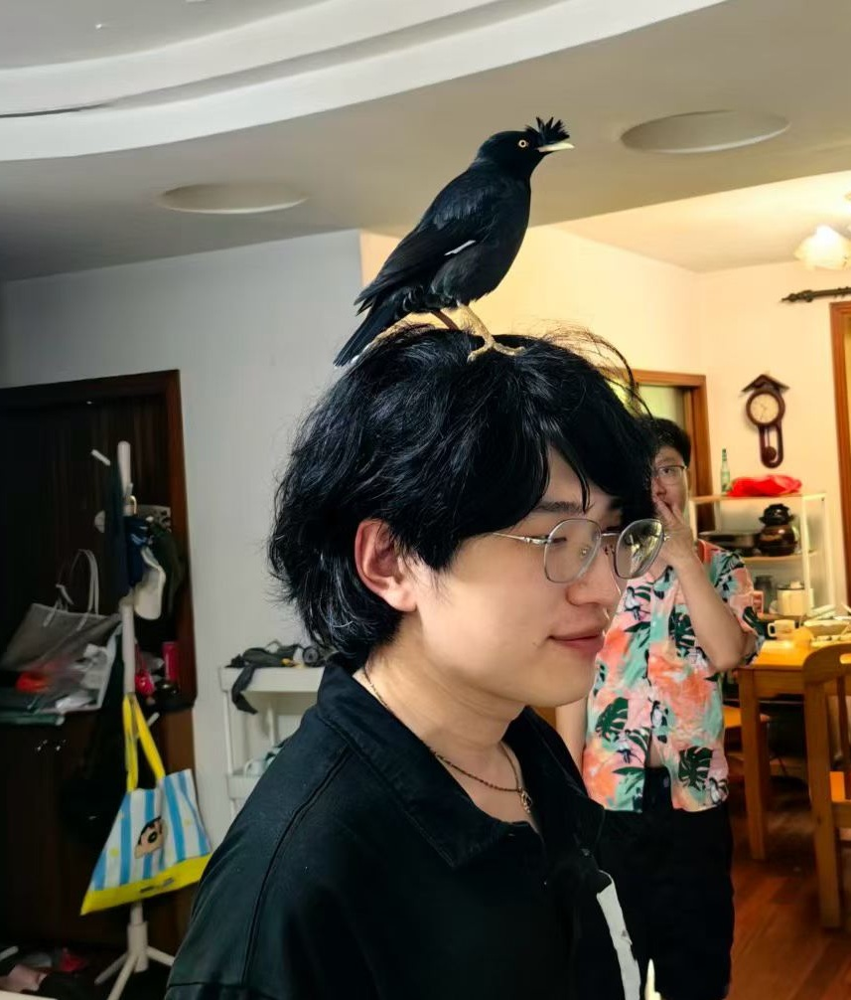

Interpretable machine learning
Attribution, hidden-unit diagnostics, and ways to understand the internal representations of neural networks.
I’m an engineering student interested in how learning systems work, and how we can make them easier to understand.
My interests span interpretable machine learning, Kolmogorov–Arnold Networks, and dynamics modeling for robotics.

Attribution, hidden-unit diagnostics, and ways to understand the internal representations of neural networks.
Learned spline functions, symbolic representations, and what a network’s structure can tell us about its behavior.
Quadrotor dynamics and hybrid models that combine physical knowledge with learning from data.
Exploring learned spline functions, symbolic replacement, edge importance, and attribution to better inspect the internal structure of Kolmogorov–Arnold Networks.
Studying data-driven and hybrid approaches to drone dynamics, with an interest in aerodynamic effects, learned residuals, disturbance estimation, and simulation.
A two-player hardware game bringing together HDMI rendering, keyboard input, sprite logic, collision detection, and real-time game-state control.
Notes and small experiments on physics-informed networks, DeepONets, weak forms, finite element methods, and interpretable modeling.
My engineering studies cover circuits, systems, signal processing, machine learning, and control. Alongside coursework, I’m exploring attribution methods, KAN diagnostics, and learning-based models of physical systems.
I’m particularly interested in the connection between mathematical models, code, and the behavior of real robotic systems.
View my curriculum vitae